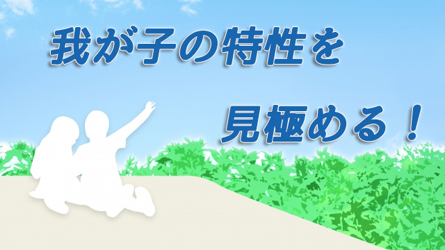

かつて中学生にこんな話をしたことがある。
「中学までは義務教育だから行かなくてはならないが、高校から先はそうではない。高校は行っても行かなくてもいいのだ。つまり君たちには高校へ進学しない自由もあるんだよ」と。
その上で「もし君たちが高校へ行かない選択をしたとすればどんな生活を送るだろう。仮に高校へ行かなかった場合、自分の取り得る人生行路について考えてみないか⁉」と話した。
そうして高校へ進学しなかった自分の生き方について想像をめぐらせて文章化するよう勧めた。
高校全入が当り前の時代になぜ私はこんな話をしたのか。
それはもちろん高校へ進学する目的を明確に持ってもらうためだ。皆が行くから。親が行けと言うから。あるいは行くのが当り前だからというそんなお仕着せの理由ではなく自分の意思で行くと決めて欲しかった。
だから原則論を述べたのだ。義務教育ではないから行っても良いし行かなくても良い。進学は決して義務ではないということをまず彼らに知って欲しかったし、そのためにも「行かない場合」を想定することで「行くことの意義」を浮かび上がらせようと思ったのだ。
行くことの意義・目的といっても大げさなことではない。自分なりの進学する目的を持ってもらいたかったのだ。大学へ行くためにステップというより、できればなぜその学校を選ぶのか自律的に考えて欲しいということ。「部活をやりたい」でも「先輩が楽しいと言ってるから」でも何でもいい。まず自分なりの理由を持って欲しかった。
「今どき高校も行かないでまともな職業につけるわけない」という大人の打算をもち込んで欲しくなかった。それは何も考えていないことになる。
幸いこの試みはうまく行った。色々考えた結果やはり高校へ行くほうが良いと感じた子が多かったからだ。中学を出てすぐ働くことや専門学校で技術を身につけることより、普通に高校へ行ったほうが将来の選択の幅が広がること。自由な学生時代を謳歌するほうが楽しいということを改めて知ったようだった。
高校へ行かない自分を想像することで、高校へ行くことの意義―有難み―を知る。逆説的な方法だが自分の意思で選ぶという意味では有効だったと思っている。
「皆と同じ」が正しいわけではない
私が生徒たちに伝えたかったことは、この自分の意思で決めることの大切さだがこれは子どもたちに限った話ではない。私たち大人も世間の常識や価値観を疑うこともなく、そのレールの上に乗っかって運ばれているだけで自らの人生を主体的に創り出そうとしていないのではないか。そんな疑問を常々感じているからだ。
私は自分が教えている生徒たちにはそんな大人になって欲しくないという強い思いがあった。
中学を出たら当り前のように高校へ進む。高校を出たら当り前のように大学を目指しそして当り前のように就活し、会社に勤め次は婚活し家庭をもち子を育て、最後は終活して人生が終わる。何か敷かれたレールの上を走らされているかのようだ。
私は別にこれが悪いと言ってるのではない。平凡な人生を送るなとか大きなことにチャレンジしろとか、冒険的な人生を送れと鼓舞したいわけでもない。自分の意思で主体的に選んだのであれば結果として平凡な人生であっても充実するだろう。
問題は皆が良いと思うことを良いと安易に考えてしまうこと。親や先生などが勧めるから従うだけの受け身な人間になること。
世間の常識に従っていれば正解だと信じ込む姿勢。
この主体性のなさに大きな危惧を感じるのだ。それは幸福とは程遠い人生になる可能性が高いと思う。少なくとも充実を得られないだろう。
操られる人生
自分の人生の目的は自分で決めるという主体性がないと社会に操られる人生を歩むことになる。多くの人は社会が提示する「これが標準的な生き方ですよ」という宣伝（暗示）に幻惑される。特に日本人は「皆そうですよ」という言葉に弱い。これは「正解」を自ら見極める自信がないからで、常に外側の権威に正解を教えてもらおうとする主体性の欠如の表れだと感じている。
「今どき中学受験させないなんて…」と言われると多くの親はその必要性を感じていなくても親の責任を果たしていないかのように感じて動揺する。そして子どもの意思を「受験」へと誘導してしまう。
「今どきソコソコの大学出てないと良い勤め先見つからないわよ」と聞けば、何としても子どもを大学に入れようとする。
これは言葉は悪いが、企業などのCMで美しいモデルを使って「この商品を身につければあなたもこんなに魅力的な人になりますよ」と巧みに宣伝するのにまんまと乗せられているのと変わらない。
厳しい言い方になってしまったが、大部分の人はこのように自らの意思ではなく世間の風潮や社会の刷り込みによって、正しいと思われる道を歩んでいるのではないだろうか。
そうして「おかしい。正解の道を歩んでいるはずなのになぜ幸せじゃないのか！」「なぜ充実感を得られないのか」と焦燥感に駆られている。
それは最初に言ったように世間の常識や価値観という「外側の正解」に疑うことなく従っているからだ。自分の内奥からわき起こる「本当はこうありたい」という望みを顧慮せず、皆と同じように敷かれたレールを歩くことが良いことだ（安心だ）と信じ切っている限り満足のいく人生にはならないと思う。
特性を活かした先に幸せがある
人はそれぞれ性格も好みも違うし得意なものも違っている。そして誰でもその人なりの才能がある。その特性をできるだけ発揮して生きることがその人にとっての幸せであり他者の役にも立つ。本人のためにもなり社会のためにもなるということ。
それにはまず自分の特性（才能）を知っておく必要がある。その特性を活かしたいと言う意思も必要だ。子どもは意外にも自分の特性に気づいているもので「○○になりたい」とか「○○が好き」という形で表現する。
しかし大半の親は「そんなことで食べていけるワケない。それよりちゃんと勉強して大学に行きなさい」と常識的な判断をしてしまう。こうしてあれ程多彩で多様な才能（個性）をもつ子どもたちも、たちまち画一的で常識的な道を歩む大人へと変貌してしまう。
だから親はもっと子どもの特性を見てそれを伸ばすよう心がけるべきだと思う。特にこれからの時代はかつてないほど個人の能力が問われることは確実になっている。それはペーパーテストの成績になかなか表れない要素であり、親が見極めるしかない。
子どもの才能を見極めるといっても難しいこともある。子どもの特性は時として「欠点」として映るからだ。
私事だが、私は子どもの頃先生からよく授業中のおしゃべりを注意された。親からも「男のくせにお前はベラベラしゃべり過ぎだ」と叱られた。しかしその一方で友人や先輩などから「お前の話は面白い。聞いていて飽きない」とか「元気がもらえる」という言葉もあった。いつしか私は自分の特性が「話すこと」「話すことで人を励ます」ことにあると気づき始めた。
そして18歳のとき私は将来「会社勤めはしない」と決めた。特に就きたい職業があったわけではなく漠然とだが自分の特性を活かすためには会社勤めではないということだけは分かった。
いま60を過ぎて振り返ってこの18のときの決意は私の人生で最良の決断だったと思う。この決断は私の人生の方向性を決定づけたからだ。すなわち特性を最大限に活かし不向きなことは他者に任せ、エネルギーを得意領域に集中させることで何か自分を役立てる生き方だ。何より私自身が十分満たされそれは今も続いている。
こうしてみると親といえど子どもの特性―才能―を見極めることは難しいのが分かる。だがそれでも親にできることはあるはずだ。少なくとも既存の価値観というレールに子どもを乗せれば良いという考えを放棄することはできる。そうして子どもの内面をもっと見つめて欲しい。子どもが何をしているときがもっとも活き活きしているか。苦労なくやれてしまうことは何なのか。
将来有利になるとか、世間的に見栄えがするとか、そのような外側を意識した「正解の道」を歩ませるのではなくもっと子ども自身を深く見つめることで特性は分かるはずだ。
その上で我が子がその特性を発揮するよう励まし温かく見守ること。
皆が自分の才能と特性に基いて活躍すればこの社会はもっと素晴らしいものになる。多様で豊かな世の中、活気ある社会が実現するだろう。